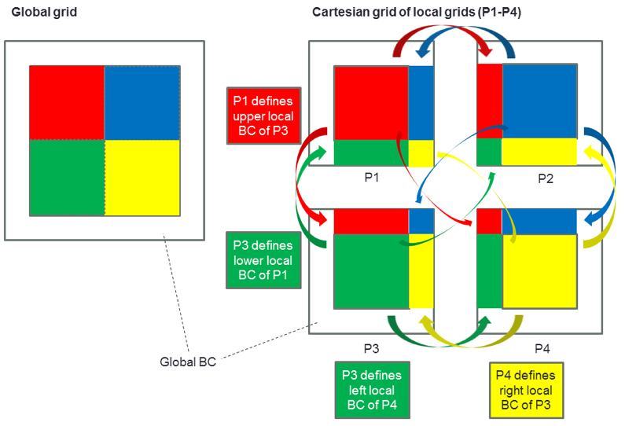
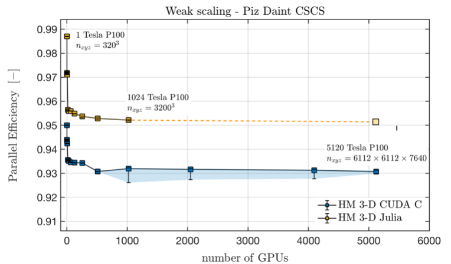
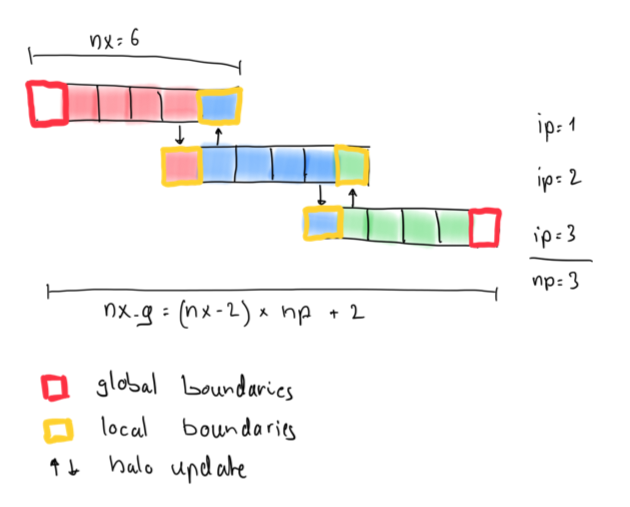
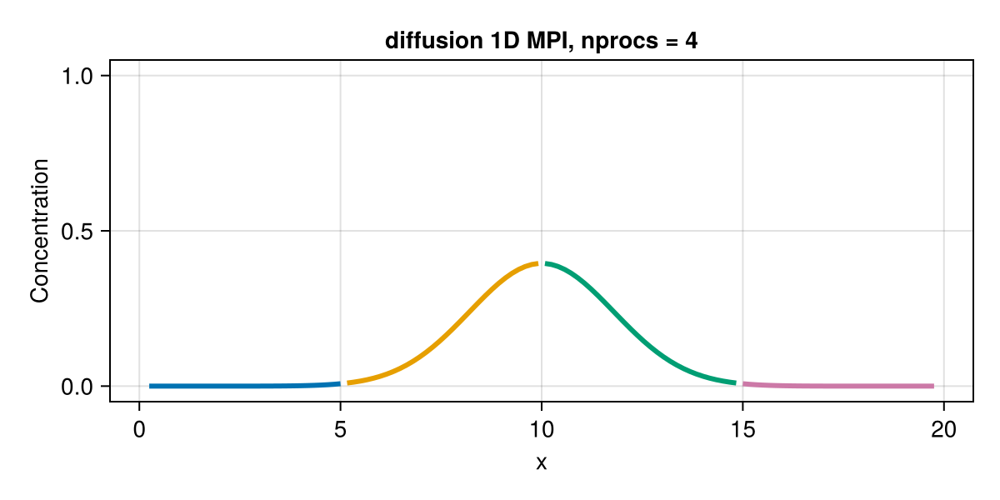

Julia MPI
The goal of this lecture is to become familiar with:
- Distributed-memory parallelisation: domain decomposition, halo updates and parallel scaling.
- Fake parallelisation: a proof of concept of the halo update, which runs on a single process.
- Distributed computing with MPI.jl: a 1D diffusion solver that runs on several processes.
In lectures 4–6, we parallelised our solvers on a single CPU with multi-threading, and on a single GPU. In this lecture, we take the next step: we distribute the computations across several processes, each with its own memory, which communicate by exchanging messages.
Distributed computing
Distributed computing adds one more layer of parallelisation. We need it when the global problem no longer fits on a single compute node or GPU. The resources of a single device, mainly its memory, are finite:
- on CPUs, distributed computing increases the number of cores beyond what a single CPU, or a single compute node, can offer;
- on GPUs, it overcomes the limited size of the device memory.
Simply put: if one CPU or GPU is not sufficient to solve a problem, use several of them, and solve a part of the global problem on each.
Distributed-memory computing lets us take advantage of computing clusters: many similar compute nodes, interconnected by a high-throughput network. Supercomputers, such as Alps, which we use in this course, are clusters of this kind.
Parallel scaling
Let’s assume that we want to solve a certain problem, which we will call the global problem. We split it into several local problems, which are solved concurrently. There are two approaches to scaling a parallel application to more computing resources: strong scaling and weak scaling.
Using more computing resources to solve the same global problem increases parallelism, and may reduce the execution time (wall time). This is called strong scaling: the resources increase, but the size of the global problem doesn’t change, so the global problem is split into more, and smaller, local problems that are solved in parallel.
The strong scaling approach is often used when parallelising legacy CPU codes: increasing the number of local problems can lead to some speed-up, up to an optimum beyond which additional processes are no longer beneficial.
However, we won’t follow that path when developing multi-GPU applications from scratch. The reason is that the performance of GPUs is very sensitive to the size of the local problem, as we experienced in lecture 5 when tuning the kernel launch parameters, i.e. the numbers of threads and blocks.
When developing multi-GPU applications from scratch, it is more suitable to approach distributed parallelism from a weak scaling perspective: first, find the optimal size of the local problem for a single GPU, and then increase the number of local problems, and thus the number of GPUs, until the global problem reaches the size that we originally wanted to solve.
Implicit global grid
We can thus replicate a local problem several times in each dimension of the Cartesian space to obtain a global grid, which is therefore defined implicitly. The local problems define each other’s local boundary conditions by exchanging the values at their internal boundaries with inter-process communication, e.g. with the Message Passing Interface (MPI), as depicted in the following figure from ImplicitGlobalGrid.jl:

Parallel efficiency
Many things can go wrong in distributed computing. However, our ultimate goal is to maintain a high parallel efficiency.
The speed-up \(S\) is the ratio of the execution time on a single processor, \(T_1\), to the execution time on \(n\) processors, \(T_n\). The parallel efficiency \(E\) is the speed-up divided by the number of processors:
These definitions apply to strong scaling, where the size of the global problem is fixed. We will use the parallel efficiency in a weak scaling configuration, in which the size of the global problem grows proportionally to \(n\). In this case, the ideal execution time stays constant, and the parallel efficiency is \(E = T_1 / T_n\), where \(T_1\) is the execution time of one local problem on one processor, and \(T_n\) the execution time of \(n\) local problems on \(n\) processors.
Ideally, the parallel efficiency should stay close to 1 while we increase the number of processors proportionally to the size of the global problem, i.e. at a constant size of the local problems. This means that no time is lost to overheads, e.g. to inter-process communication, network congestion or congestion of the shared file system. The following figure from ImplicitGlobalGrid.jl shows the parallel efficiency of a 3D hydro-mechanical solver, written in CUDA C and in Julia, on up to 5120 GPUs of Piz Daint, the predecessor of Alps at CSCS:

Let’s get started
We will explore distributed computing with MPI.jl, the Julia wrapper of MPI. It enables our codes to run on multiple CPUs and GPUs, and thus to scale on modern multi-CPU and multi-GPU nodes, clusters and supercomputers. In our approach, each MPI process handles one CPU or one GPU.
We will tackle distributed parallelisation in three steps:
- fake parallelisation with 2 fake processes, as a proof of concept;
- fake parallelisation with
npfake processes; - a 1D diffusion solver with Julia and MPI.
👉 On your computer, create a folder for this lecture, make it a Julia project, and add the packages CairoMakie, JLD2 and MPI.
Fake parallelisation
As a first step, we will look at the 1D diffusion solver from lecture 2, parallelised with a “fake parallelisation” approach. We split the computational domain into two parts, the left and the right domain, and store the concentration in two arrays, CL and CR, respectively.
In this fake parallelisation, the computations for the left and the right domain are performed sequentially by a single process. However, they could be performed by two distinct processes, if the boundary update, often called halo update in the literature, were done with MPI.

The figure shows a global grid made of np = 3 local grids with nx = 6 cells each. The first and the last cell of each local grid are its boundary cells. At the ends of the global domain, they are global boundaries, where the boundary conditions apply. Inside the domain, they are local boundaries, also called halo cells: they hold copies of the values computed by the neighbouring process. Neighbouring local grids thus overlap by 2 cells, and the global grid has nx_g = (nx - 2) * np + 2 cells.
The idea of the fake parallelisation is the following:
# compute physics locally
qxL .= .-dc.*diff(CL)./dx
qxR .= .-dc.*diff(CR)./dx
CL[2:end-1] .-= dt.*diff(qxL)./dx
CR[2:end-1] .-= dt.*diff(qxR)./dx
# update boundaries (MPI)
# CL[end] = ...
# CR[1] = ...
# global picture
C .= [CL[1:end-1]; CR[2:end]]
Each domain computes its fluxes and updates its inner cells, as the solver of lecture 2 does for the whole domain. The boundary cells CL[end] and CR[1] are not updated: their values must come from the neighbouring domain. A correct boundary update is therefore the critical part of a successful implementation. In our approach, CL and CR overlap by 2 cells, which avoids any wrong computations at the transition between the left and the right domain.
Step 1: 2 fake processes
👉 Copy the following “fake parallel” 1D diffusion script to a file diffusion_1D_2procs.jl. The script is missing the boundary updates of the 2 fake processes. Run it, and describe what you see in the animation diffusion_1D_2procs.mp4, which the script saves in the current folder.
The script also solves the diffusion equation on the global grid, C_g, as a reference, which it plots with markers. At the end, it prints the maximum difference between the solution of the 2 fake processes and the reference.
# Linear 1D diffusion with 2 fake MPI processes
using CairoMakie
function diffusion_1D_2procs(; do_visu=true)
# physics
lx = 20.0
dc = 1.0
# numerics
nx = 32 # local number of grid cells
nvis = 5
# preprocessing
nx_g = 2 * (nx - 2) + 2 # global number of grid cells
dx = lx / nx_g
xc_g = LinRange(dx/2, lx-dx/2, nx_g)
dt = dx^2 / dc / 2
nt = 200
# array initialisation
C_g = @. exp(-(xc_g - lx/2)^2) # global reference
qx_g = zeros(nx_g-1)
CL = C_g[1:nx] # left local domain
CR = C_g[nx-1:end] # right local domain
qxL = zeros(nx-1)
qxR = zeros(nx-1)
C = [CL[1:end-1]; CR[2:end]] # global picture
# create plot
if do_visu
fig = Figure(size=(600, 300))
ax = Axis(fig[1,1]; xlabel="x", ylabel="Concentration")
ylims!(ax, -0.05, 1.05)
plt = (scatter!(ax, xc_g, C_g; color=:blue, markersize=6, label="global reference"),
lines!(ax, xc_g, C; color=:red, linewidth=2, label="2 fake processes"))
axislegend(ax)
io = VideoStream(fig; framerate=10)
end
# time loop
for it = 1:nt
# compute physics locally
qxL .= .-dc.*diff(CL)./dx
qxR .= .-dc.*diff(CR)./dx
CL[2:end-1] .-= dt.*diff(qxL)./dx
CR[2:end-1] .-= dt.*diff(qxR)./dx
# update boundaries (MPI)
# CL[end] = ...
# CR[1] = ...
# global picture
C .= [CL[1:end-1]; CR[2:end]]
# compute physics globally (check)
qx_g .= .-dc.*diff(C_g)./dx
C_g[2:end-1] .-= dt.*diff(qx_g)./dx
# visualisation
if do_visu && it % nvis == 0
plt[1][2] = C_g
plt[2][2] = C
recordframe!(io)
end
end
println("max. difference to the global reference: ", maximum(abs.(C .- C_g)))
do_visu && save("diffusion_1D_2procs.mp4", io)
return
end
diffusion_1D_2procs()
👉 Then, add the required boundary updates to make the code work properly, and run it again. What has changed in the animation?
Want to see the answer?
Answer
The last cell of CL overlaps with the second cell of CR, and the first cell of CR overlaps with the second-to-last cell of CL:
# update boundaries (MPI)
CL[end] = CR[2]
CR[1] = CL[end-1]
Without the boundary updates, the overlapping cells CL[end] and CR[1] keep their initial values, and act as fixed boundary conditions in the middle of the domain: the peak of the Gaussian stays at its initial value instead of diffusing. With the boundary updates, the solution of the 2 fake processes matches the global reference, and the script prints a maximum difference of 0:
From 2 to np fake processes
The next step is to generalise the fake parallelisation from 2 to np fake processes. The idea of this generalised approach is the following:
for ip = 1:np # compute physics locally
qx[:, ip] .= .-dc.*diff(C[:, ip])./dx
C[2:end-1, ip] .-= dt.*diff(qx[:, ip])./dx
end
for ip = 1:np-1 # update boundaries
# ...
end
The array C now contains np local domains: each column of C belongs to one fake process, namely the process indicated by the second index of C, ip. The boundary updates have to be adapted accordingly. All physical calculations happen on the local chunks of the arrays. We only need “global” knowledge to define the initial condition.
Simple initial conditions, e.g. constant values, can be defined without computing any coordinates. To define other initial conditions, such as our Gaussian anomaly, we usually need the global coordinates of the cells. In the code below, the global coordinates of the cell centres can be computed from the process index ip, the cell index ix, the local array size nx, the overlap of the local domains (2 cells) and the grid spacing of the global grid dx. Along the way, we assemble the global coordinates xc_g and the global initial condition C_g, which we use for plotting:
# initial condition
for ip = 1:np
for ix = 1:nx
# xc[ix, ip] = ...
C[ix, ip] = exp(-(xc[ix, ip] - lx/2)^2)
end
i1 = 1 + (ip - 1) * (nx - 2)
xc_g[i1:i1+nx-2] .= xc[1:end-1, ip]; if (ip == np) xc_g[i1+nx-1] = xc[end, ip] end
C_g[i1:i1+nx-2] .= C[1:end-1, ip]; if (ip == np) C_g[i1+nx-1] = C[end, ip] end
end
Step 2: np fake processes
👉 Copy the following 1D diffusion script to a file diffusion_1D_nprocs.jl. Complete the initial condition: compute the global coordinates xc[ix, ip] of the cell centres, so that the Gaussian anomaly is centred in the domain, at \(x = l_x/2\).
Hint
As in lecture 2, the cell centres of the global grid are located at dx/2, 3dx/2, …, lx-dx/2. Each local domain is shifted by nx-2 cells with respect to the previous one.
👉 Then, run the script, which is missing the boundary updates of the np fake processes, and describe what you see in the animation diffusion_1D_nprocs.mp4. Each local domain is plotted with a different colour, and the initial condition with markers. Finally, add the required boundary updates to make the code work properly, and run it again. What has changed in the animation?
# Linear 1D diffusion with n fake MPI processes
using CairoMakie
function diffusion_1D_nprocs(; do_visu=true)
# physics
lx = 20.0
dc = 1.0
# numerics
np = 4 # number of fake processes
nx = 32 # local number of grid cells
nvis = 5
# preprocessing
nx_g = (nx - 2) * np + 2 # global number of grid cells
dx = lx / nx_g
dt = dx^2 / dc / 2
nt = 200
# array initialisation
xc = zeros(nx, np) # local coordinates
C = zeros(nx, np) # local concentrations
qx = zeros(nx-1, np) # local fluxes
xc_g = zeros(nx_g) # global coordinates
C_g = zeros(nx_g) # global initial condition
# initial condition
for ip = 1:np
for ix = 1:nx
# xc[ix, ip] = ...
C[ix, ip] = exp(-(xc[ix, ip] - lx/2)^2)
end
i1 = 1 + (ip - 1) * (nx - 2)
xc_g[i1:i1+nx-2] .= xc[1:end-1, ip]; if (ip == np) xc_g[i1+nx-1] = xc[end, ip] end
C_g[i1:i1+nx-2] .= C[1:end-1, ip]; if (ip == np) C_g[i1+nx-1] = C[end, ip] end
end
# create plot
if do_visu
fig = Figure(size=(600, 300))
ax = Axis(fig[1,1]; xlabel="x", ylabel="Concentration")
ylims!(ax, -0.05, 1.05)
scatter!(ax, xc_g, C_g; color=:blue, markersize=4)
plt = [lines!(ax, xc[:, ip], C[:, ip]; linewidth=3) for ip = 1:np]
io = VideoStream(fig; framerate=10)
end
# time loop
for it = 1:nt
for ip = 1:np # compute physics locally
qx[:, ip] .= .-dc.*diff(C[:, ip])./dx
C[2:end-1, ip] .-= dt.*diff(qx[:, ip])./dx
end
for ip = 1:np-1 # update boundaries
# ...
end
# visualisation
if do_visu && it % nvis == 0
for ip = 1:np
plt[ip][2] = C[:, ip]
end
recordframe!(io)
end
end
do_visu && save("diffusion_1D_nprocs.mp4", io)
return
end
diffusion_1D_nprocs()
Want to see the answer?
Answer
The global index of the cell ix of the process ip is (ip - 1) * (nx - 2) + ix, and the centre of the global cell i is located at (i - 0.5) * dx:
xc[ix, ip] = ((ip - 1) * (nx - 2) + ix - 0.5) * dx
Each pair of neighbouring processes ip and ip+1 exchanges its boundary values as in step 1:
for ip = 1:np-1 # update boundaries
C[end, ip ] = C[ 2, ip+1]
C[ 1, ip+1] = C[end-1, ip ]
end
Without the boundary updates, each local domain evolves independently, with fixed values in its halo cells: the peak of the Gaussian anomaly, located at the boundary between the processes 2 and 3, stays at its initial value, and the anomaly doesn’t spread into the domains of the processes 1 and 4. With the boundary updates, the local solutions join smoothly:
Julia and MPI
We are now ready to write a code that truly distributes the calculations across several processes, using MPI.jl for the inter-process communication.
MPI setup
Make sure that you have a working Julia MPI environment: follow the steps in the section Julia MPI of the Software installation page, and run the “Hello world” test with 4 processes.
Let us look at the minimal requirements for writing a distributed code in Julia with MPI.jl. We will solve the linear diffusion equation with the time loop of lecture 2:
for it = 1:nt
qx .= .-dc.*diff(C)./dx
C[2:end-1] .-= dt.*diff(qx)./dx
end
To distribute the computations, we take the following steps:
- initialise MPI and set up a Cartesian communicator;
- implement a boundary update routine;
- create a “global” initial condition;
- finalise MPI.
1. Initialising MPI
To initialise MPI and to set up the Cartesian communicator, we write:
import MPI
MPI.Init()
comm = MPI.COMM_WORLD
nprocs = MPI.Comm_size(comm)
dims = MPI.Dims_create(nprocs, [0])
comm_cart = MPI.Cart_create(comm, dims)
me = MPI.Comm_rank(comm_cart)
coords = MPI.Cart_coords(comm_cart)
neighbors_x = MPI.Cart_shift(comm_cart, 0, 1)
- The communicator
MPI.COMM_WORLDcontains all MPI processes, andMPI.Comm_sizereturns their number,nprocs. MPI.Dims_createdistributes the processes over the dimensions of a Cartesian grid of processes. The zeros mark the dimensions in which MPI is free to choose the number of processes: in 1D,dims = [nprocs].MPI.Cart_createcreates a new communicator,comm_cart, in which the processes are arranged on this Cartesian grid. By default, the grid is not periodic.meis the rank of the process, a unique ID of each MPI process, starting at 0. It is the analogue ofipin the fake parallelisation.coordscontains the coordinates of the process in the grid of processes, also starting at 0.MPI.Cart_shiftreturns the ranks of the left and the right neighbour,neighbors_x[1]andneighbors_x[2]. At the ends of the global domain, a process has no neighbour on one side, and the corresponding rank isMPI.PROC_NULL.
2. Boundary update routine
Then, we implement a boundary update routine, which can have the following structure:
function update_halo!(A, neighbors_x, comm)
# send to / receive from neighbour 1 ("left neighbour")
if neighbors_x[1] != MPI.PROC_NULL
sendbuf = ??
recvbuf = ??
MPI.Send(??, comm; dest=neighbors_x[?], tag=0)
MPI.Recv!(??, comm; source=neighbors_x[?], tag=1)
A[1] = ??
end
# send to / receive from neighbour 2 ("right neighbour")
if neighbors_x[2] != MPI.PROC_NULL
sendbuf = ??
recvbuf = ??
MPI.Recv!(??, comm; source=neighbors_x[?], tag=0)
MPI.Send(??, comm; dest=neighbors_x[?], tag=1)
A[end] = ??
end
return
end
MPI.Send sends the data in a buffer to the process with the rank dest, and MPI.Recv! receives data from the process with the rank source into a pre-allocated buffer. The tag identifies the message: each MPI.Send is matched by an MPI.Recv! with the same tag on the receiving process.
Blocking communication
MPI.Send and MPI.Recv! are blocking: MPI.Recv! returns only once the message has been received, and MPI.Send may wait until the receiving process is ready. Therefore, the order of the calls matters. Every process first exchanges data with its left neighbour, sending first, and then with its right neighbour, receiving first. This way, the MPI.Send of a process to its left neighbour always meets the MPI.Recv! of that neighbour from its right neighbour. If both processes started with MPI.Send, they could wait for each other forever, which is called a deadlock.
3. Global initial condition
Then, we initialise C with a “global” Gaussian anomaly that spans correctly over all local domains. This can be achieved, e.g., as follows:
x0 = coords[1] * (nx - 2) * dx
xc = [x0 + ix*dx - dx/2 for ix = 1:nx]
C = @. exp(-(xc - lx/2)^2)
Here, x0 is the global coordinate of the left edge of the local domain, which depends on the coordinates of the process coords, and xc contains the global coordinates of the local cell centres, as in the fake parallelisation. As before, the grid spacing dx = lx / nx_g follows from the global number of grid cells, nx_g = dims[1] * (nx - 2) + 2.
4. Finalising MPI
Last, we need to finalise MPI before returning from the main function:
MPI.Finalize()
Step 3: 1D parallelisation with MPI
The following script contains all the steps described above, except for the boundary updates (step 2). At the end, every process saves its local arrays C and xc to the file mpi1D_out_<rank>.jld2 for visualisation.
👉 Copy the script to a file diffusion_1D_mpi.jl. Run it, still without the boundary updates, three times: with 1, 2 and 4 processes, replacing <np> with the number of processes:
mpiexecjl -n <np> julia --project diffusion_1D_mpi.jl
# Linear 1D diffusion with MPI
# run: mpiexecjl -n 4 julia --project diffusion_1D_mpi.jl
using Printf, JLD2
import MPI
# MPI functions
function update_halo!(A, neighbors_x, comm)
# send to / receive from neighbour 1 ("left neighbour")
if neighbors_x[1] != MPI.PROC_NULL
# ...
end
# send to / receive from neighbour 2 ("right neighbour")
if neighbors_x[2] != MPI.PROC_NULL
# ...
end
return
end
function diffusion_1D_mpi(; do_save=false)
# MPI
MPI.Init()
comm = MPI.COMM_WORLD
nprocs = MPI.Comm_size(comm)
dims = MPI.Dims_create(nprocs, [0])
comm_cart = MPI.Cart_create(comm, dims)
me = MPI.Comm_rank(comm_cart)
coords = MPI.Cart_coords(comm_cart)
neighbors_x = MPI.Cart_shift(comm_cart, 0, 1)
if (me == 0) println("nprocs = $(nprocs), dims[1] = $(dims[1])") end
# physics
lx = 20.0
dc = 1.0
# numerics
nx = 32 # local number of grid cells
# preprocessing
nx_g = dims[1] * (nx - 2) + 2 # global number of grid cells
dx = lx / nx_g
dt = dx^2 / dc / 2
nt = 100
# array initialisation
x0 = coords[1] * (nx - 2) * dx
xc = [x0 + ix*dx - dx/2 for ix = 1:nx]
C = @. exp(-(xc - lx/2)^2)
qx = zeros(nx-1)
# time loop
t_tic = 0.0
for it = 1:nt
# start the timer after 10 warm-up iterations
if (it == 11) t_tic = Base.time() end
qx .= .-dc.*diff(C)./dx
C[2:end-1] .-= dt.*diff(qx)./dx
update_halo!(C, neighbors_x, comm_cart)
end
# performance
t_toc = Base.time() - t_tic
t_it = t_toc / (nt - 10) # execution time per iteration [s]
A_eff = 2 * nx * sizeof(Float64) / 1e9 # effective main memory access per iteration [GB]
T_eff = A_eff / t_it # effective memory throughput [GB/s]
if (me == 0) @printf("Time = %1.3e s, T_eff = %1.2f GB/s\n", t_toc, T_eff) end
# save the local arrays for visualisation
if do_save
jldsave(joinpath(@__DIR__, "mpi1D_out_$(me).jld2"); C, xc)
end
MPI.Finalize()
return
end
diffusion_1D_mpi(; do_save=true)
👉 After each run, visualise the results with the following script vizme1D_mpi.jl (adapt the variable nprocs!), and describe what you see in the figure diffusion_1D_mpi.png. Then, add the required boundary updates to make the code work properly, and run it again. What has changed in the figure?
# Visualisation script for the 1D MPI solver
using CairoMakie, JLD2
nprocs = 4
function vizme1D_mpi(nprocs)
fig = Figure(size=(600, 300))
ax = Axis(fig[1,1]; xlabel="x", ylabel="Concentration", title="diffusion 1D MPI, nprocs = $(nprocs)")
ylims!(ax, -0.05, 1.05)
for ip = 1:nprocs
C, xc = load(joinpath(@__DIR__, "mpi1D_out_$(ip-1).jld2"), "C", "xc")
# plot the inner cells only: the halo cells are copies of the neighbours' inner cells
lines!(ax, xc[2:end-1], C[2:end-1]; linewidth=3)
end
save(joinpath(@__DIR__, "diffusion_1D_mpi.png"), fig)
return
end
vizme1D_mpi(nprocs)
Hint
For the boundary updates, proceed as follows for the communication with each neighbour:
- create a send buffer and a receive buffer, and store the right value in the send buffer;
- send and receive the data with
MPI.SendandMPI.Recv!; - store the received data at the right position in the array.
Weak scaling
The local number of grid cells nx doesn’t change with the number of processes: every process solves a local problem of the same size. With more processes, the global grid has more cells, the grid spacing dx and the time step dt are smaller, and the solution after nt time steps corresponds to an earlier physical time. Therefore, only compare the results of runs with the same number of processes.
Want to see the answer?
Answer
function update_halo!(A, neighbors_x, comm)
# send to / receive from neighbour 1 ("left neighbour")
if neighbors_x[1] != MPI.PROC_NULL
sendbuf = A[2]
recvbuf = zeros(1)
MPI.Send(sendbuf, comm; dest=neighbors_x[1], tag=0)
MPI.Recv!(recvbuf, comm; source=neighbors_x[1], tag=1)
A[1] = recvbuf[1]
end
# send to / receive from neighbour 2 ("right neighbour")
if neighbors_x[2] != MPI.PROC_NULL
sendbuf = A[end-1]
recvbuf = zeros(1)
MPI.Recv!(recvbuf, comm; source=neighbors_x[2], tag=0)
MPI.Send(sendbuf, comm; dest=neighbors_x[2], tag=1)
A[end] = recvbuf[1]
end
return
end
As in the fake parallelisation, every process sends its first inner cell A[2] to its left neighbour, where it becomes the halo cell A[end], and its last inner cell A[end-1] to its right neighbour, where it becomes the halo cell A[1]. Without the boundary updates, the halo cells keep their initial values, and the local domains evolve independently, as in step 2. With the boundary updates and 4 processes, the result looks as follows:

Congratulations! You have just written a distributed-memory diffusion solver in about 75 lines of code.
This completes the introduction to distributed parallelisation with Julia. High-level Julia packages, such as ImplicitGlobalGrid.jl, make distributed parallelisation on CPUs and GPUs a very simple task. We will explore it in the next lecture.
Wrapping up
- Distributed computing splits a global problem into local problems, which are solved by several processes, each with its own memory. For multi-GPU applications, we follow the weak scaling approach: we keep the size of the local problems optimal for a single GPU, and increase the number of GPUs with the size of the global problem.
- Neighbouring local domains overlap, and exchange the values in their halo cells in halo updates. Fake parallelisation on a single process helped us work out the correct halo update.
- We implemented a 1D diffusion solver with MPI.jl, which distributes the computations across several processes with blocking point-to-point communication.